Judgment in the age of abundance
AI can generate endlessly. What becomes scarce is not output, but the ability to see, choose, and decide what is worth keeping.
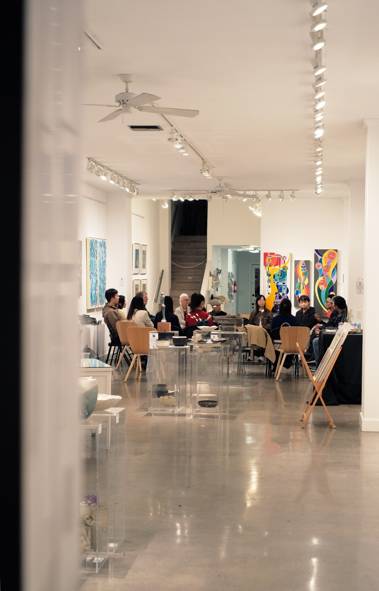
Why AIC Exists
AI can generate endlessly. What becomes scarce is not output, but the ability to see, choose, and decide what is worth keeping.
Art has always evolved with new tools. AIC explores AI as a medium for images, stories, symbols, and self-expression.
For many of us, work can become repetitive and detached from personal meaning. AIC creates a space to reflect, create, and ask what matters.
Who It's For
AIC is for curious people across technology, art, design, research, and everyday life who want to use AI as a creative medium: to make images, explore ideas, and think more deeply about identity, imagination, and what matters to them.
From the Founder
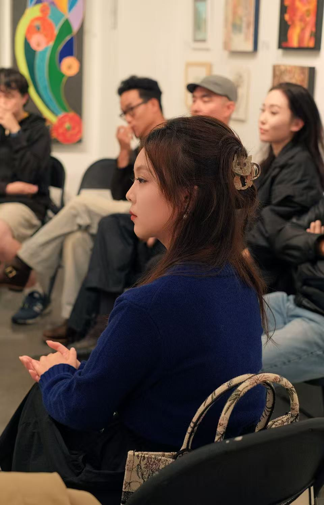
Founded in 2025 by Linli Wang, AIC grew from a personal search for meaning across engineering, art, work, and life in the age of AI.
Read Why I Started AICGatherings
Next gathering
Past
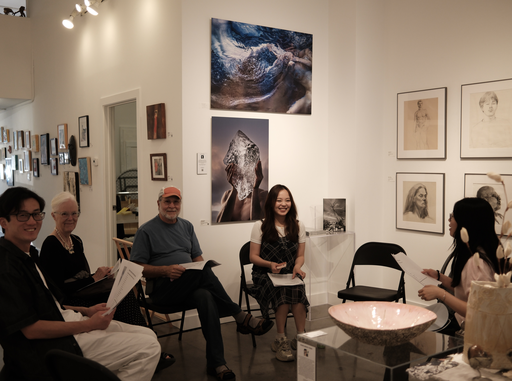
Experiment: identity, symbols, AI co-creation
A small-group workshop exploring self-portraiture beyond the face, using AI, writing, and conversation to translate memory, objects, and inner life into image.
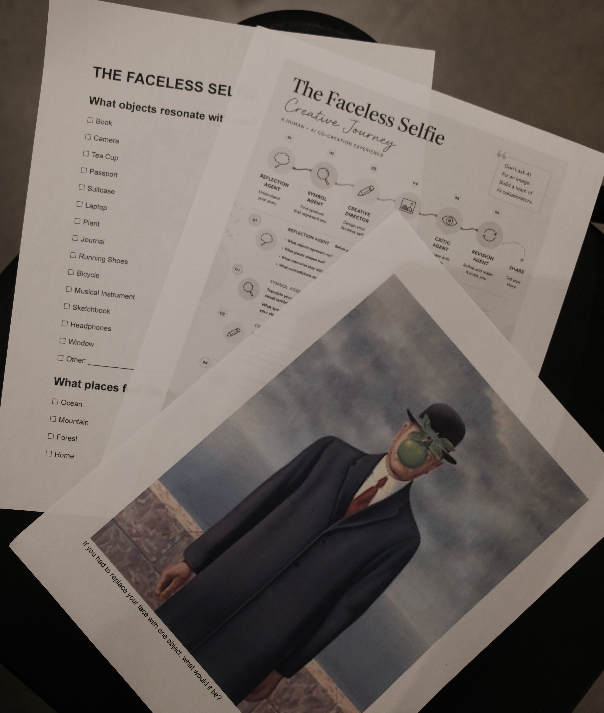
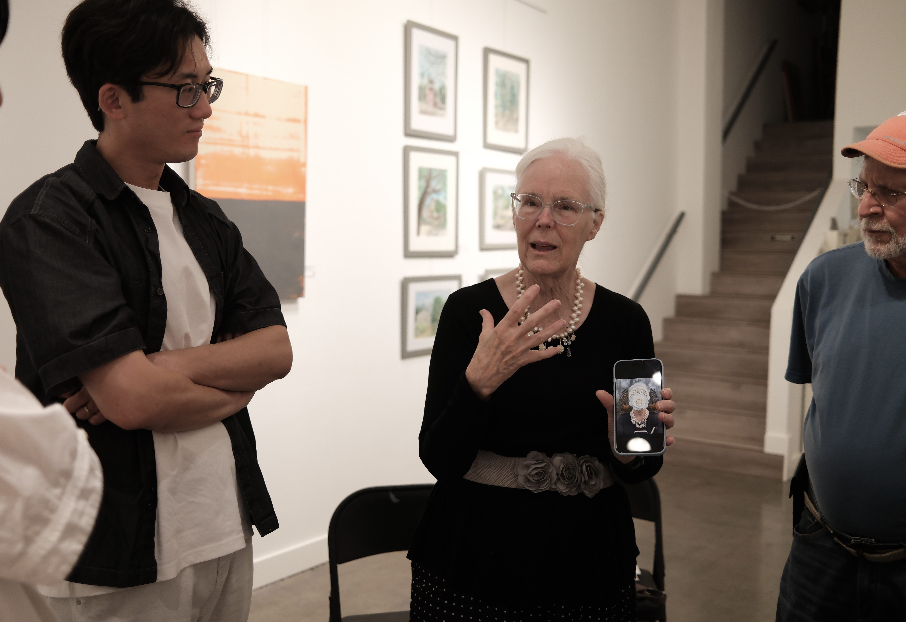

Shift: hands-on, structured, judgment in practice
A hands-on experiment using fashion design to explore taste, decision-making, and AI as a thinking partner.


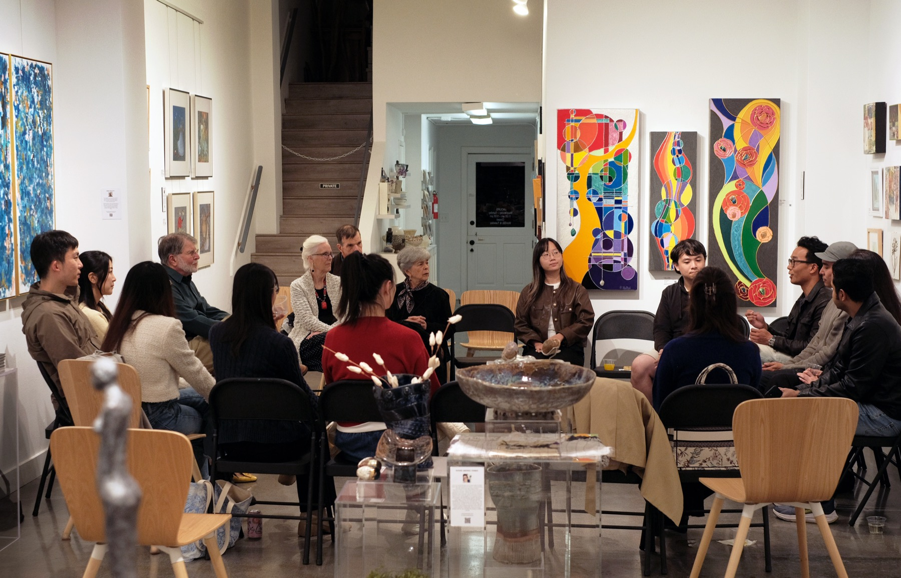
Iteration: salon, dialogue, taste as intelligence
An intimate evening around taste, creativity, and computation, exploring how aesthetic intuition shapes art, AI, and design.
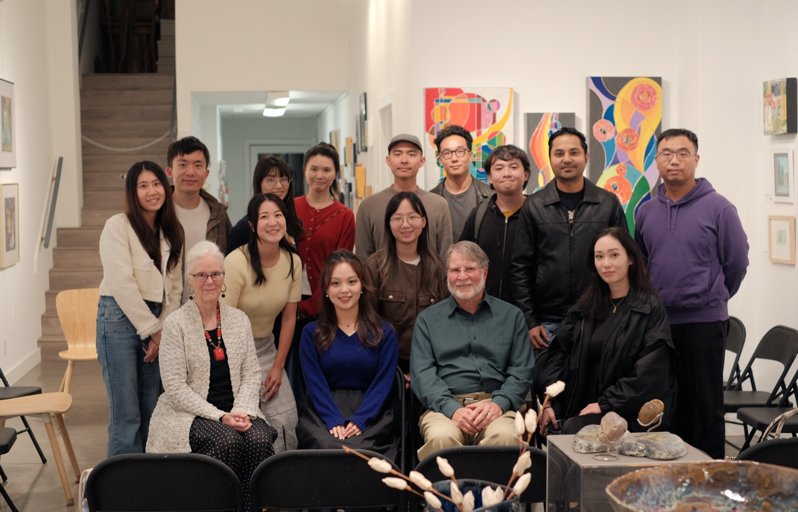
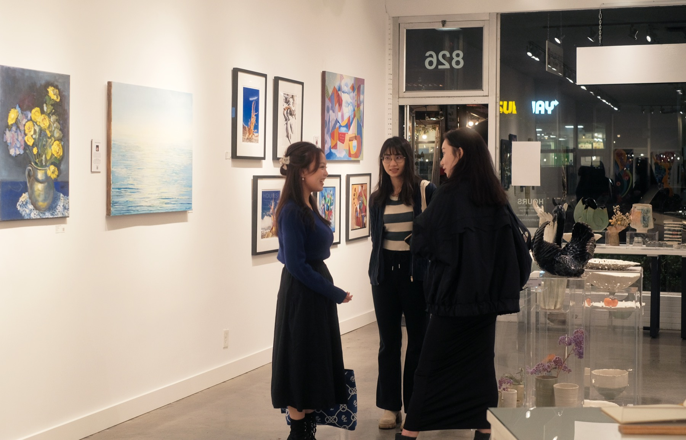

Origin: outdoors, reflective, conversation-led
A calm Sunday morning gathering exploring beauty, perception, and what it means to design beautifully in an age of AI.


Journal
Essays shaped by gatherings, by hosting, and by the questions that linger after people leave.
AI can generate endlessly. It still cannot tell us what matters.
Essay 01
In a world of abundant images, meaning may become the scarcest creative resource.
Essay 02
Visuals
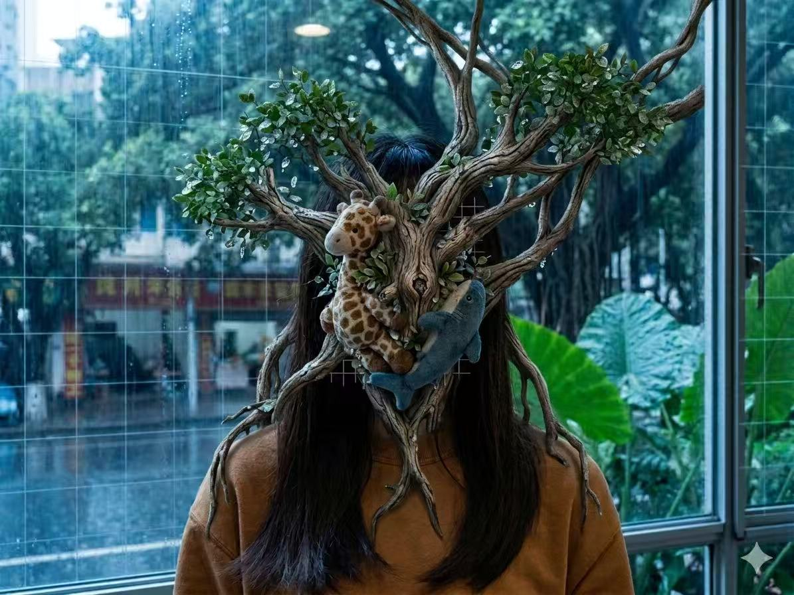
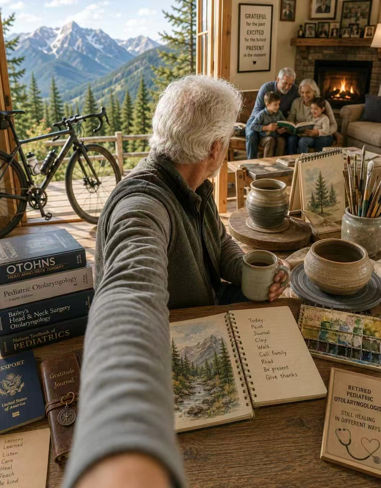
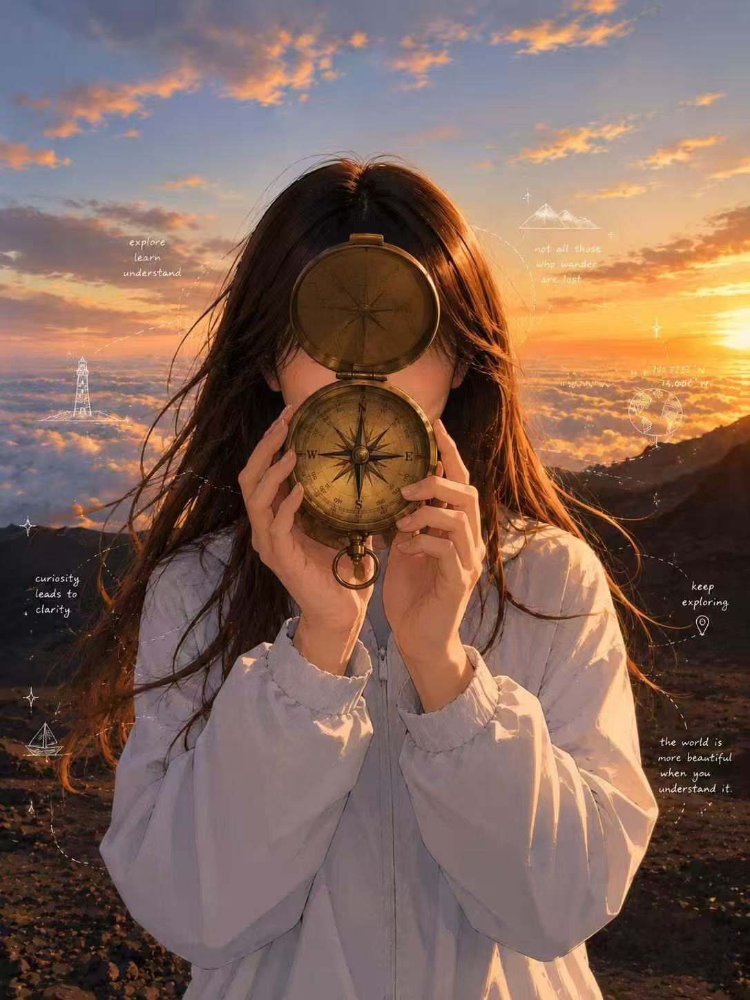
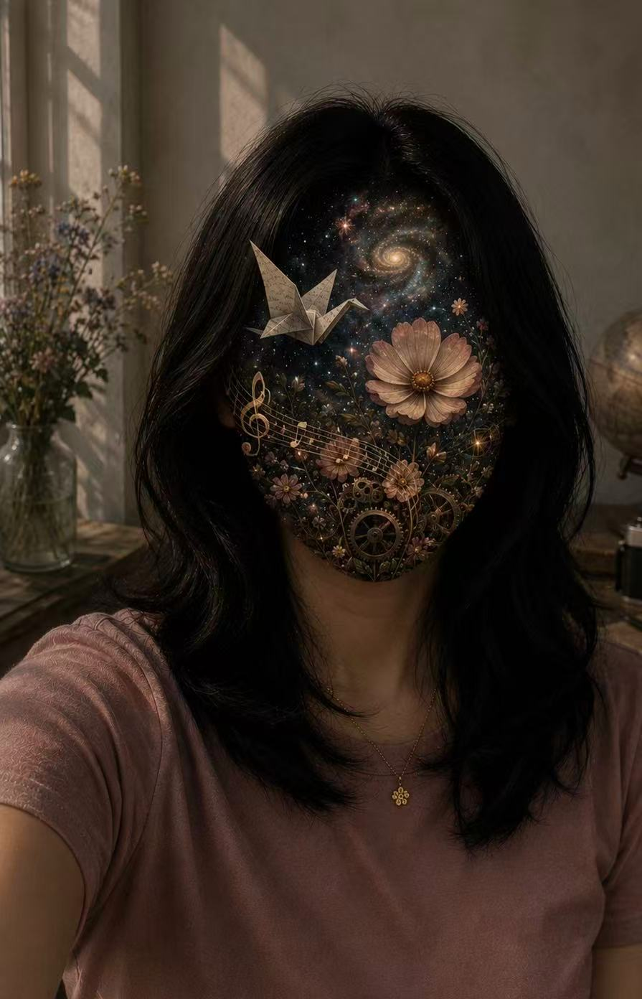
Get Involved
Early Collaborators
We're inviting a small group of collaborators to help shape AIC through outreach, documentation, and events.
Why join
Future Updates
Get updates on upcoming gatherings, community news, and future ways to get involved.
Join the Mailing List